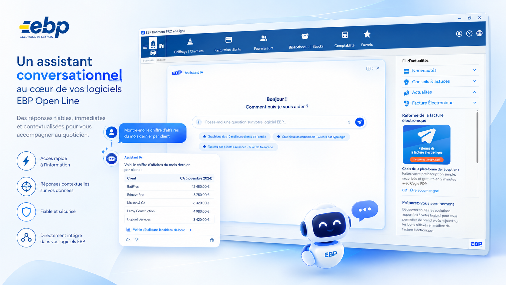
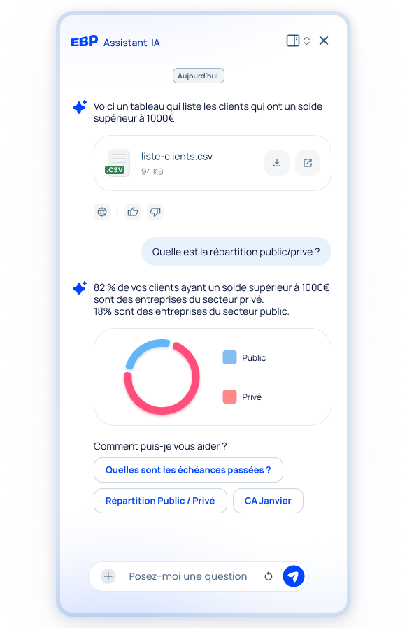
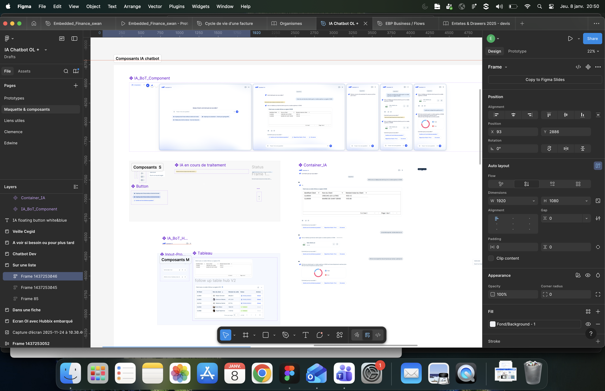
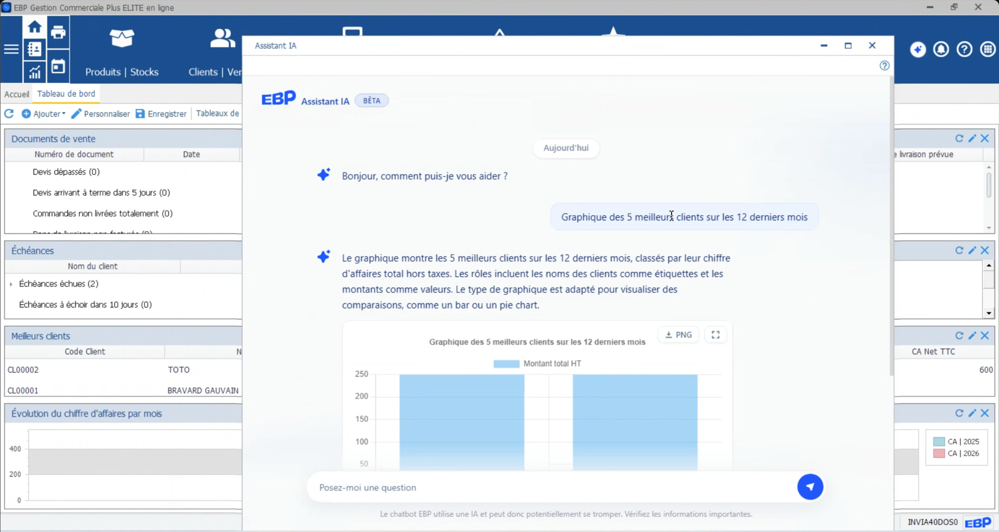

Concevoir une nouvelle relation entre l'utilisateur et son logiciel grâce à l'IA

En 2026, EBP a lancé un projet stratégique : intégrer un assistant conversationnel directement dans ses logiciels de gestion. Le premier terrain d'expérimentation était EBP Open Line Gestion Commerciale, une solution historique de facturation et de gestion.
Arrivée dès le kick-off, j'étais responsable du design de l'expérience IA avec une autre Product Designer, au sein d'une équipe de 7 personnes (PM, PMM, Product Lead, Project Manager et trois développeurs). J'ai guidé ma collègue, plus junior, sur la discovery. Après la restitution, elle a rejoint un autre projet et j'ai repris seule l'UX/UI de l'assistant.
Lancé en juillet 2026, l'assistant a réuni 80 utilisateurs actifs et près de 400 prompts en 20 jours.
Open Line est une gamme riche, mais construite sur des technologies historiques : certains parcours restent complexes et l'autonomie des utilisateurs limitée. Leurs attentes évoluent. Ils veulent prendre en main leur logiciel par eux-mêmes, alors que le modèle d'EBP repose sur la formation et l'accompagnement par les revendeurs.
Et si le logiciel pouvait lui-même accompagner l'utilisateur, comprendre son contexte et l'aider à accomplir certaines tâches ?
L'objectif : expérimenter cette nouvelle relation, répondre aux attentes du marché et tirer des enseignements pour étendre l'IA à toute la gamme EBP.
Fin 2025, j'avais rejoint un groupe de travail UX inter-équipes consacré à l'IA dans les logiciels, ce qui m'a donné un premier état de l'art. En janvier 2026, le marketing et le pôle Data ont lancé une étude quantitative auprès de la base clients : 141 réponses, dont 37 volontaires pour la suite.
J'ai retenu 14 profils variés (comptabilité, gestion commerciale, mécanique, bâtiment). Avec ma collègue, j'ai construit la grille d'entretien, puis mené les interviews entre février et mars 2026, accompagnée de consultants métier. J'ai accéléré l'analyse avec Dovetail, qui transcrit, catégorise les verbatims et fait ressortir les récurrences : j'étudiais l'impact de l'IA tout en l'utilisant moi-même dans ma recherche. La synthèse a été présentée aux parties prenantes fin avril.
Pour des professionnels qui gèrent leurs données commerciales et financières, l'IA ne peut pas être une boîte noire : ils veulent savoir que leurs données et celles de leurs clients sont protégées et ne servent pas à entraîner un modèle.
La confiance m'a amenée à poser des questions qui ont influencé le fonctionnement même de l'assistant :
Avec une IA, le résultat dépend de la demande, du contexte, des données et du modèle. J'ai donc conçu une expérience capable de gérer :
Elle doit aussi comprendre le contexte métier. Face à « Combien ai-je réalisé de chiffre d'affaires avec LCL ? », elle doit distinguer la banque d'une société homonyme :
Le framework existant limite certaines évolutions UX/UI. J'ai arbitré en continu entre l'expérience idéale, la faisabilité technique, la performance, le coût et la valeur utilisateur. Certaines propositions coûtaient cher en tokens, d'autres obligeaient à interroger davantage de données au détriment des performances : j'ai cherché avec les développeurs la solution qui conservait le maximum de valeur.

J'ai volontairement commencé par un périmètre limité. La V1 permet de comprendre et répondre (réponses, tableaux, graphiques, PDF, analyses), l'utilisateur gardant la responsabilité de l'action. La V2 vise à agir : automatiser, déléguer, recommander. Elle pose une nouvelle question de design :
Quel niveau de contrôle doit-on laisser à l'utilisateur lorsqu'une IA agit en son nom ?
Chaque semaine, je présentais les fonctionnalités conçues au Weekly de l'équipe IA pour les confronter aux contraintes techniques, décider des priorités et itérer vite. Je suis devenue l'interlocutrice UX/UI principale du Product Lead et des développeurs.

Avant le lancement, une version Beta a été mise à disposition des revendeurs. J'ai assisté à l'un de leurs tests et enregistré la session : l'IA questionnait aussi le support, le commerce, la formation et leur rôle.
J'ai intégré un mécanisme de feedback dans l'expérience : après une réponse, l'utilisateur indique si elle lui a été utile et, sinon, précise ce qui n'a pas fonctionné. Un tableau de bord interne suit l'utilisation de l'assistant.

L'analyse des clients et des ventes figure parmi les premiers usages. Autre signal moins attendu : certains utilisateurs demandent à l'IA comment réaliser une action dans le logiciel. Cela confirme une hypothèse du projet : l'IA peut devenir une nouvelle porte d'entrée dans Open Line, en réduisant la difficulté liée à la navigation.
Que veut faire l'utilisateur et comment puis-je lui permettre de le faire simplement ?
Que veut faire l'utilisateur, que peut comprendre l'IA, que peut-elle réellement faire et quel niveau de contrôle dois-je conserver ?
Mon travail porte désormais sur l'amélioration continue, avec une approche plus data-driven. Un principe reste central : plus l'IA devient autonome, plus l'expérience doit rendre le contrôle, les intentions et les conséquences compréhensibles.